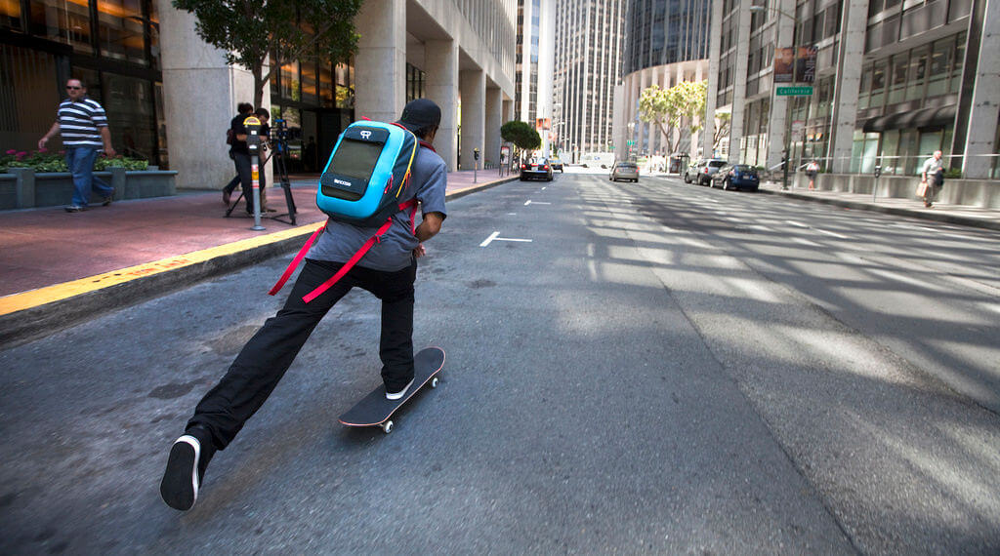

Le skate, c'est magique!
Qui n'a jamais révé de dévaler les pentes, sentir le vent sur sa peau, filer à une vitesse folle tout en faisant des figures dignes des plus grands films d'actions hollywoodiens? Oui,je ne suis pas du tout original , je sais.
Mais faut dire que le skate, ça m'interessait beaucoup depuis très longtemps. Alors, en Novembre 2021, je me suis acheté mon premier Skateboard !...Et je l'ai regretté le jour suivant, quand je me suis cassé la figure au skatepark du coin. Mais j'étais déterminé et en faisant mes recherches , je suis tombé sur des cruisers( sorte de skate plus cours et un peu plus stables) et c'était le coup de foudre! Je m'en suis acheté un pour pas cher et je dévale maintenant les pentes avec ! ...Enfin , presque.
Les premiers jours étaient assez difficiles. Tenir sur une planche en mouvement n'est pas aussi aisé qu'il n'y parait : trouver l'équilibre est assez ardu au début, mais à force de persévérence, on prend le coup après quelques heures d'entrainement. La réelle difficulté réside dans le fait d'avancer.En effet, pour ce faire, il faut d'abord avoir connaissance de son pied d'appui (gauche/regular ou droit/goofy) puis il faut pouvoir coordonner le mouvement de ses jambes afin de pousser avec l'un tout en gardant son poids sur le pied reposé sur la planche. C'est assez complexe au début , mais encore une fois tout est question de pratique. La prochaine étape , c'est d'apprendre des figures! Mais cela demande beaucoup plus d'entrainement. Personnellement, je ne suis pas encore capable d'en faire , mais je m'entraine afin de réussir un ollye, ce qui revient grosso modo à faire un saut vertical avec la planche. C'est la porte d'entrée à une grande variété de figures au skate, d'où l'importance de l'apprendre, si on souhaite se perfectionner dans ce domaine. Le ollye sert aussi à éviter les petits obstacles sur le chemin, ce qui peut-être un plus si on désire se déplacer sur un skateboard!